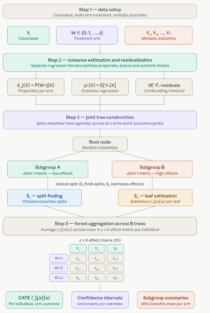

A Multi-Arm/Multi-Outcome Causal Forest extends the standard Causal Forest to handle two common real-world complications simultaneously: there may be more than two treatment options (multiple arms), and the researcher may care about more than one outcome at the same time (multiple outcomes). It remains fully within the Generalized Random Forest (GRF) framework, preserving the core properties of honest estimation and non-parametric flexibility.
The key promise of this extension is information sharing: by modeling treatment arms and outcomes jointly, the forest can borrow strength across related estimates rather than fitting each comparison in isolation — improving precision, especially when sample sizes per arm are limited.
When to Use It
A multi-arm/multi-outcome causal forest is the right tool when the research question is of the form: “How does each treatment affect each outcome, and does this vary across subgroups?”
Concrete settings include:
Clinical trials comparing several drugs or dosing regimens on multiple patient health metrics simultaneously (e.g., blood pressure, cholesterol, adverse events).
Policy evaluation where several interventions (e.g., cash transfers, job training, mentoring) are tested and success is measured across multiple dimensions (e.g., employment rate, income, school attendance).
Marketing experiments with multiple campaign strategies evaluated on several customer metrics (e.g., click-through rate, conversion, retention).
In all these cases, fitting separate single-arm, single-outcome models would ignore correlations between outcomes and inflate estimation variance — particularly when some arms have few observations.
Key Concepts
Multi-arm treatment effects. With \(J\) treatment arms (including control \(W = 0\)), the forest estimates \(J\) separate conditional effects for each individual:
\[\tau_j(X) = E[Y \mid W = j,\, X = x] - E[Y \mid W = 0,\, X = x], \quad j = 1, \ldots, J\]
Multi-outcome treatment effects. With \(K\) outcomes \(Y_1, \ldots, Y_K\), the forest estimates an effect for each combination of arm \(j\) and outcome \(k\):
\[\tau_{j,k}(X) = E[Y_k \mid W = j,\, X = x] - E[Y_k \mid W = 0,\, X = x]\]
The full output for an individual is therefore a \(J \times K\) matrix of treatment effect estimates.
Joint splitting criterion. Unlike fitting \(J \times K\) independent forests, a single tree’s splits are chosen to maximize heterogeneity across all arms and outcomes simultaneously, using a joint loss function that respects the covariance structure among outcomes. This is what enables information sharing.
Nuisance estimation. Propensity scores \(\hat{e}_j(X) = P(W = j \mid X)\) and outcome regressions \(\hat{\mu}_k(X)\) are estimated using separate regression forests. Residualizing with these nuisances — forming \(\tilde{Y}_k = Y_k - \hat{\mu}_k(X)\) and \(\tilde{W}_j = \mathbf{1}(W=j) - \hat{e}_j(X)\) — removes confounding before the causal forest estimates effects.
Honest estimation. As in all GRF methods, each tree uses a separate subsample to find splits (\(S_1\)) and to estimate effects within leaves (\(S_2\)), preventing overfitting and ensuring asymptotically valid confidence intervals.
How It Works

Multi-arm multi-outcome causal forest
A few things worth emphasizing from the pipeline:
The\(J \times K\) matrix in step 5 is the defining output. Each row is a treatment arm; each column is an outcome. For an individual with covariates \(X = x\), every cell gives a separate CATE estimate with its own confidence interval. This is what distinguishes the multi-arm/multi-outcome forest from running \(J \times K\) separate causal forests — the joint splitting criterion in step 3 means the covariate partitions reflect shared structure across all cells, not independent ones.
Step 2 (nuisance estimation) is more complex here than in the binary treatment case. With \(J\) arms, the forest must estimate \(J\) propensity scores \(\hat{e}_j(X)\) — one per arm — and \(K\) outcome regressions \(\hat{\mu}_k(X)\). These are estimated via separate regression forests and used to form the residuals \(\tilde{W}_j\) and \(\tilde{Y}_k\) that the causal forest then splits on.
Information sharing is the key efficiency gain. When outcomes \(Y_1\) and \(Y_2\) are correlated (e.g., systolic and diastolic blood pressure), the joint covariance structure in the splitting criterion means that a split informative for one outcome also informs the other. This can substantially reduce variance compared to independent forests, particularly in small-sample regimes.
Key Differences from Standard Causal Forest
Standard Causal Forest: Handles one treatment (binary or continuous) and one outcome, estimating a single treatment effect per individual.
Shares information across arms/outcomes to improve estimation efficiency.
Uses a joint objective function to optimize splits for all treatments and outcomes simultaneously.
Advantages
Handles complex experiments with multiple treatments and outcomes.
Captures heterogeneity in treatment effects across subgroups.
Robust to non-linear relationships and high-dimensional covariates.
Improves efficiency by sharing information across arms/outcomes.
Limitations
Requires sufficient sample size for each treatment arm and outcome.
Assumes unconfoundedness (no unmeasured confounders) unless combined with other methods (e.g., instrumental variables).
Computationally intensive for large datasets or many outcomes.
Interpretability can be challenging due to complex output (multiple effects per individual).
Multi-arm/multi-outcome Causal Forest in Python
This tutorial implements a multi-arm/multi-outcome causal forest with MultiArmCausalForest from PyCausalML. The example simulates a three-arm treatment and two outcomes from Data/patients.csv.
Setup
This notebook fits MultiArmCausalForest from PyCausalML (pycausalml.tree_based_models).
fit(X, treatment, y) returns the fitted estimator. predict returns a NumPy array of conditional average treatment effects. A fitted model also exposes explain and plot_shap.
Install the package from this repository, with the plotting and boosting extras.
The three-arm patient example is built with make_patient_multiarm from causal_tree_methods.py in this folder. Arm labels are coded placebo=0, A=1, B=2, and the baseline arm is 0.
Code
import subprocessimport sysfrom pathlib import Pathdef _repo_root() -> Path: here = Path.cwd().resolve()for cand in [here, *here.parents]:if (cand /"pyproject.toml").is_file() and (cand /"src"/"pycausalml").is_dir():return candraiseFileNotFoundError("PyCausalML repository was not found. Run this notebook from the repository." )root = _repo_root()subprocess.check_call([ sys.executable, "-m", "pip", "install", "-q", "-e", f"{root}[plot,boost,shap]", "statsmodels",])print("PyCausalML ready.")
PyCausalML ready.
Code
%matplotlib inlineimport matplotlib.pyplot as pltimport numpy as npimport pandas as pdimport seaborn as snsfrom pycausalml import ( MultiArmCausalForest, explain_cate,)import sysfrom pathlib import Pathdef _add_methods_path(): here = Path.cwd().resolve()for cand in [here, *here.parents]:for rel in ( Path("causal_tree_methods.py"), Path("Tutorials") /"05_01_Tree_Based_Models"/"causal_tree_methods.py", Path("Notebook") /"05_01_Tree_Based_Models"/"causal_tree_methods.py", ): path = cand / relif path.is_file(): sys.path.insert(0, str(path.parent))returnraiseFileNotFoundError("causal_tree_methods.py was not found")_add_methods_path()from causal_tree_methods import ( make_patient_multiarm,)def find_repo_root(start=None) -> Path: here = Path(start or Path.cwd()).resolve()for cand in [here, *here.parents]:if (cand /"Data").is_dir() and (cand /"Image").is_dir():return candraiseFileNotFoundError("Could not find a folder containing Data/ and Image/.")def data_path(filename: str) -> Path:return find_repo_root() /"Data"/ filenamesns.set_theme(style="whitegrid")plt.rcParams["figure.dpi"] =110print("Imported PyCausalML")
Imported PyCausalML
Prepare the patient dataset
The example is built from Data/patients.csv: real age, comorbidity, baseline risk, and sex, a simulated three-arm treatment (placebo, A, B), observed log length of stay, and a simulated binary clinical response that improves under A and more so under B.
make_patient_multiarm builds that design from Data/patients.csv:
Draws a three-level treatment (placebo, A, B) with probabilities 40%, 30%, and 30%.
Keeps observed log length of stay (log_los) as the first outcome. Treatment is randomized, so its effect on length of stay is null.
Simulates a binary clinical response that is higher under arm A and higher still under arm B.
placebo 641
A 498
B 461
Name: count, dtype: int64
outcomes ['log_los', 'response']
Train the Multi-arm/Multi-outcome Causal Forest
The arms are placebo, A, and B, and the outcomes are log length of stay and clinical response. MultiArmCausalForest estimates contrasts against a baseline for one outcome at a time, so we fit a separate model for each outcome.
Code
ARM = {"placebo": 0, "A": 1, "B": 2}CONTRAST = {1: "A - placebo", 2: "B - placebo"}def encode_arm(labels):return np.array([ARM[str(a)] for a in np.asarray(labels)])def contrast_frame(model, rows): pred = np.asarray(model.predict(rows)) columns = [CONTRAST[int(arm)] for arm in model.arms_]return pd.DataFrame(pred, columns=columns)def ate_table(model): rows = []for arm, forest inzip(model.arms_, model.forests_): ate = forest.average_treatment_effect() rows.append({"contrast": CONTRAST[int(arm)],"estimate": ate["estimate"],"std.err": ate["std.err"], })return pd.DataFrame(rows)W_train_code = encode_arm(W_train)macf_log_los = MultiArmCausalForest(baseline=0, num_trees=60, min_node_size=8, random_state=1)macf_response = MultiArmCausalForest(baseline=0, num_trees=60, min_node_size=8, random_state=2)macf_log_los.fit(X_train, W_train_code, Y_train[:, 0], feature_names=feature_names)macf_response.fit(X_train, W_train_code, Y_train[:, 1], feature_names=feature_names)print("Fitted one forest per outcome")
log length of stay
A - placebo B - placebo
0 0.034385 0.283482
1 0.015815 -0.142222
2 -0.029373 -0.144031
3 -0.156336 0.151620
4 -0.116162 0.273966
clinical response
A - placebo B - placebo
0 0.076200 0.504776
1 0.225444 0.192521
2 0.398804 0.322517
3 0.208306 0.167362
4 0.027868 0.089350
Calculate Doubly Robust Average Treatment Effects (AIPW)
We compute the average treatment effects (ATE) for each arm relative to placebo with the doubly robust scores stored on each fitted forest.
Code
print("Average treatment effects for log_los")print(ate_table(macf_log_los).round(3))print("Average treatment effects for response")print(ate_table(macf_response).round(3))
Average treatment effects for log_los
contrast estimate std.err
0 A - placebo 0.050 0.032
1 B - placebo 0.102 0.032
Average treatment effects for response
contrast estimate std.err
0 A - placebo 0.106 0.03
1 B - placebo 0.213 0.03
Plot Variable Importance
Finally, we plot covariate importance for each outcome.
print("A vs placebo — response")print(pd.DataFrame({"feature": feature_names, "mean_abs_shap": np.abs(sv_A.values).mean(0)}))
A vs placebo — response
feature mean_abs_shap
0 age_z 0.078815
1 comorbidity_z 0.238589
2 baseline_risk_z 0.089441
3 gender_male 0.019149
Importance Plots
Code
fig, axes = plt.subplots(1, 2, figsize=(10, 4))for ax, sv, title in ( (axes[0], sv_A, "Response: A vs placebo"), (axes[1], sv_B, "Response: B vs placebo"),): order = np.argsort(np.abs(sv.values).mean(0)) ax.barh(np.array(feature_names)[order], np.abs(sv.values).mean(0)[order], color="#4C72B0") ax.set_title(title)fig.tight_layout()plt.show()
Multi-arm/multi-outcome causal forests are powerful tools for estimating heterogeneous treatment effects in complex settings with multiple treatments and outcomes. By leveraging the flexibility of random forests, they provide robust estimates that account for individual differences and correlations between outcomes. This approach is particularly useful in fields like healthcare, policy evaluation, and marketing, where understanding the nuanced effects of different interventions is crucial. This tutorial used MultiArmCausalForest from PyCausalML to analyze treatment effects on two outcomes at once. This approach allows researchers to gain deeper insights into the effectiveness of various interventions across diverse populations and outcomes, ultimately leading to more informed decision-making.
SHAP values from explain_cate() interpret the heterogeneous treatment effects, so the same workflow covers estimation and interpretation.
For a boosted multi-arm approach that fits one outcome model per arm and then forms contrasts relative to a baseline, see the multi-arm causal boost tutorial in this folder.
Resources
Wager, S., & Athey, S. (2018). Estimation and Inference of Heterogeneous Treatment Effects using Random Forests. JASA.
Athey, S., Tibshirani, J., & Wager, S. (2019). Generalized Random Forests. Ann. Statist.
The estimator in this tutorial is MultiArmCausalForest in PyCausalML.